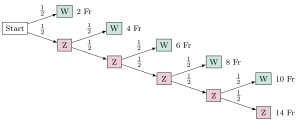

Aufgabe 6.6
Spieler A und B vereinbaren, eine Münze so lange zu werfen, bis Wappen erscheint, maximal jedoch fünf Mal. A zahlt an B für jeden notwendigen Wurf 2 Fr. Ist nach dem 5. Wurf noch kein Wappen eingetreten, muss A 14 Fr bezahlen. Wie gross muss der Einsatz von B sein, damit das Spiel fair ist?
- Bestimmen Sie die möglichen Auszahlungen: 2, 4, 6, 8, 10 oder 14 Fr
- Berechnen Sie die Wahrscheinlichkeit für k Würfe bis zum ersten Wappen (geometrische Verteilung)
- Beachten Sie die Sonderregel: Nach 5 Würfen ohne Wappen zahlt A 14 Fr statt 10 Fr
- Der faire Einsatz von B entspricht dem Erwartungswert der Auszahlung von A
Spielregeln:
- Münze werfen bis Wappen erscheint, maximal 5 Mal
- A zahlt an B: 2 Fr pro Wurf
- Sonderfall: Kein Wappen nach 5 Würfen → A zahlt 14 Fr (statt 10 Fr)
Baumdiagramm des Spielverlaufs:

Bestimmung der Wahrscheinlichkeiten:
Sei W = Wappen, Z = Zahl. Die Wahrscheinlichkeit für jeden Ausgang ist $\frac{1}{2}$.
- Ereignis: W
- Wahrscheinlichkeit:
$P = \frac{1}{2}$
- Auszahlung: 2 Fr
Fall 2: Wappen beim 2. Wurf
- Ereignis: ZW
- Wahrscheinlichkeit:
$P = \frac{1}{2} \cdot \frac{1}{2} = \frac{1}{4}$
- Auszahlung: 4 Fr
Fall 3: Wappen beim 3. Wurf
- Ereignis: ZZW
- Wahrscheinlichkeit:
$P = \frac{1}{2} \cdot \frac{1}{2} \cdot \frac{1}{2} = \frac{1}{8}$
- Auszahlung: 6 Fr
Fall 4: Wappen beim 4. Wurf
- Ereignis: ZZZW
- Wahrscheinlichkeit:
$P = \left(\frac{1}{2}\right)^4 = \frac{1}{16}$
- Auszahlung: 8 Fr
Fall 5: Wappen beim 5. Wurf
- Ereignis: ZZZZW
- Wahrscheinlichkeit:
$P = \left(\frac{1}{2}\right)^5 = \frac{1}{32}$
- Auszahlung: 10 Fr
Fall 6: Kein Wappen in 5 Würfen
- Ereignis: ZZZZZ
- Wahrscheinlichkeit:
$P = \left(\frac{1}{2}\right)^5 = \frac{1}{32}$
- Auszahlung: 14 Fr (Sonderregel!)
Verteilung der Auszahlung X:
| $k$ | 2 | 4 | 6 | 8 | 10 | 14 |
| $P(X=k)$ | $\frac{1}{2}$ | $\frac{1}{4}$ | $\frac{1}{8}$ | $\frac{1}{16}$ | $\frac{1}{32}$ | $\frac{1}{32}$ |
Kontrolle:
$$\frac{1}{2} + \frac{1}{4} + \frac{1}{8} + \frac{1}{16} + \frac{1}{32} + \frac{1}{32} = \frac{16 + 8 + 4 + 2 + 1 + 1}{32} = \frac{32}{32} = 1 \checkmark$$
Berechnung des Erwartungswerts:
\begin{align*} E[X] &= 2 \cdot \frac{1}{2} + 4 \cdot \frac{1}{4} + 6 \cdot \frac{1}{8} + 8 \cdot \frac{1}{16} + 10 \cdot \frac{1}{32} + 14 \cdot \frac{1}{32}\\ &= 1 + 1 + \frac{3}{4} + \frac{1}{2} + \frac{5}{16} + \frac{7}{16}\\ &= 2 + \frac{3}{4} + \frac{1}{2} + \frac{12}{16}\\ &= 2 + \frac{3}{4} + \frac{1}{2} + \frac{3}{4}\\ &= 2 + \frac{3}{4} + \frac{2}{4} + \frac{3}{4} = 2 + \frac{8}{4} = 4 \end{align*}
Fazit:
Der Erwartungswert der Auszahlung beträgt 4 Fr. Damit das Spiel fair ist, muss B einen Einsatz von 4 Fr zahlen. Bei diesem Einsatz ist der erwartete Gewinn für beide Spieler gleich Null.